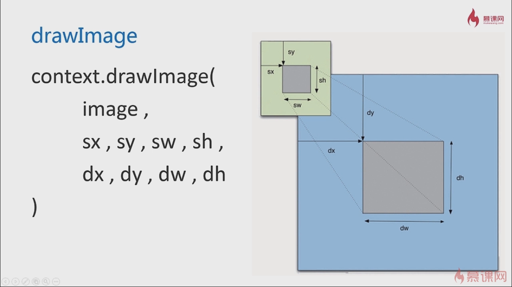

<!DOCTYPE html>
<html>
	<head>
		<meta charset="UTF-8">
		<meta name="viewport" content="width=device-width,initial-scale=1,maximum-scale=1.0,minimum-scale=1.0,user-scalable=no" />
		<link rel="stylesheet" href="../css/reset.css" />
		<title></title>
		<style>
			img{
				width: 100%;
			}
			.ing{
				width: 100%;
				height: 500px;
				background-image: url(../img/1.png);
				background-image: -webkit-image-set(url(http://mat1.gtimg.com/www/images/qq2012/qqlogo_1x.png) 1x,
				url(../img/1e.jpg) 2x,url(../img/4.jpg) 3x);
				background-image: image-set(url(http://mat1.gtimg.com/www/images/qq2012/qqlogo_1x.png) 1x,
				url(../img/1e.jpg) 2x,url(../img/4.jpg) 3x);
  				background-repeat: no-repeat;
}
			}
		</style>
		
	</head>
	<body>
		<!--固定宽度图像：基于设备像素比选择-->
		<!--<div>
			
		</div>-->
		
		<!--可变宽度的图像：基于viewport选择-->
		<div>
			
		</div>
		
		<div class="ing"></div>
	</body>
</html>
